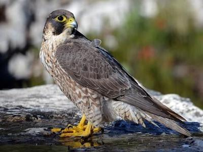
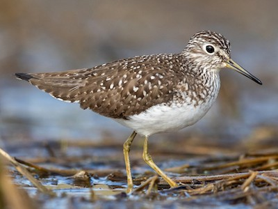
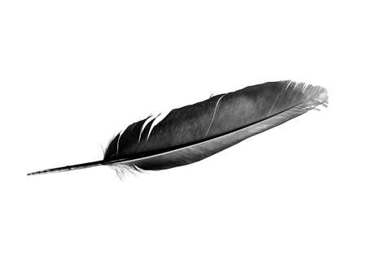

Wow! Based on your answers... You share similarities with the Peregrine Falcon (Falco peregrinus) with a little bit of Solitary Sandpiper (Tringa solitaria)

The Peregrine Falcon is not only the fastest bird species but the fastest being on the planet, yes even faster than the cheetah, reaching speeds of up to 240 miles per hour when diving! Standing at 12-18 inches tall, the Peregrine Falcon is on the smaller side. These traits are what connect your height and athleticism to the Peregrine Falcon. Like you, the Solitary Sandpiper and the Peregrine Falcon are very solitary creatures, Peregrine Falcons often don't even have long lasting love for their offspring and are extremely territorial, no other Peregrine's can enter anothers territory. Like these two birds, you enjoy your alone time and are an athletic machine!
Want to learn more about this species? Click the Feather!
Click on Ceasar to Restart!